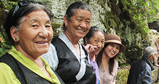
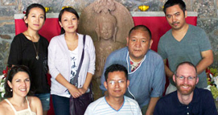
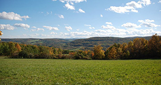
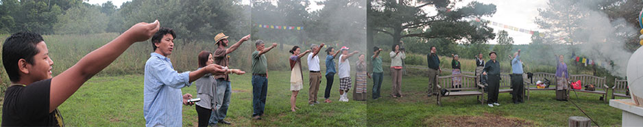

Annual Tibetan Elders Picnic 2013
July 12 -14, Berne, New York.
$1153
pledged of $4000 goal-
Since at the beginning and end of our lives we are so dependent on others' kindness, how can it be that in the middle we neglect kindness towards others.
- His Holiness the Dalai Lama.
-

The small gift
We can never repay their kindness but the picnic was an extremely small gesture of appreciation to our elders who have sacrificed so much in order to provide a better life for us.
- Thupten N Chakrishar, Tibetan Elders Picnic 2012 -

Organizers
Initiated by VajraTV in collaboration with Tongnyi Nyingjé Ling, the picnic is organised by individual community members. The project is happily supported by volunteers and individual donors.
All donations of cash or kind are documented and published on this website. -

Venue
Under the spiritual direction of Sogyal Rinpoche, Tongnyi Nyingjé Ling is set on 350 acres of unspoiled hills and meadows in upstate New York. The land boasts a stunning expanse of forests and meadows, and commanding views of the southern Catskills and the surrounding state forest and small farms.
VajraTV is pleased to announce that once again we are co-organizing a free weekend picnic for the elderly Tibetans living in New York area with our co-organizer Tongyi Nyingje Ling- Center for Wisdom and Compassion. A number of Tibetan elderly living in New York with their families spend most of their time in their homes because of lack of Tibetan monasteries or community centers where they would usually meet when they were in Tibet, Nepal or India. We want to give back something to the wonderful generation that worked so hard in keeping the Tibetan spirit alive.
We beieve the picnic is a wonderful idea for them to relax, contemplate and have fun. Since we’re taking them to the stunning land of Tongnyi Nyingje Ling, which boasts a stunning 350 acres expanse of forests and meadows, and commanding views of the southern Catskills and the surrounding state forest and small farms, we believe they will feel once again connected to the nature and enjoy their time there.
We are extremely grateful to Tongnyi Nyingje Ling for offering us the land with retreat houses without any cost for the picnic. The picnic program includes: Singing, Tibetan traditional group-dancing (Gorshey), Tibetan board game (Sho), a lot of Tibetan butter tea, story-telling and a stand up comedy show. However, we still need to raise funds for the bus rental, food and a support car rental; Please contribute to this project and help make it happen, we will post updates and send you pictures from the picnic.After last years success, the elder participants have doubled this year (we are taking about 24 elders this time). More the merrier, so are the expenses.
The entire support team (including the chefs!) are volunteers. We take 3 days off from work and hop on the bus with the elders. The elders travel comfortably in 2 mini buses driven by volunteer commercial drivers, the busses are followed by support cars. The support team includes chefs with kitchen helpers, designated drivers, minders, a standup comedian, a musician and some people who just hang around.
The venue is free aswell, it comes bundled with the blessings of Sogyal Rinpoche and the support of the lovely lovely staffs of Tongyi Nyingje Ling.
So why do you need the funds?
Good question. It does look like everything is free right? Well, we still need to pay for the following:
2 mini buses X 3 days rental
Gas and Toll taxes for all vehicles
Food and supplies
Support vehicles
miscellaneous expenses like first aid kit etc.
Last year the total expense was $2000 (click here for full report; does not include miscellaneous expenses). This year we have doubled and the estimated budget is $4000, every dollar counts. So help us out, please:
Okay, let me chip in!
Our contributors are really the ones who are making this picnic happen, so we will prominently display your name on the Big Shiny Board below, unless you instruct us not to because you're super shy or your name contains secret coordinates to treasure maps or just want to remain anonymous for some other reasons.We have a video for you:
If you live in New York or know any of the elders in the video, please do ask one of them; we think they'll describe the picnic experience better than us.Do it yourself (DIY). You can and totally should organize an elders picnic in your area, it'll be great fun (countless good karma!). The intention should be pure and clear. The only thing we want to share is that please understand and remember that you are not 'doing a favor' to the elders, you're returning. It is Dharma, moral obligation and a fun project. Be humble, respectable and compassionate to the elders, they deserve it.
Good Luck!

The Big Shiny Board!
The big shiny board prominently displays our supporters who have already contributed.
Law Offices of Tenzin Wangyal Diki Daycare Center Lama Accounting Inc. Joanne Baltad Tsering Yangchen (Tseyang) Tashi Gyalpo Yak Restaurant Francesco Malatesta Tenzin Dechen Lhasa Fast Food Tsering Phuntsok (Pele)
-